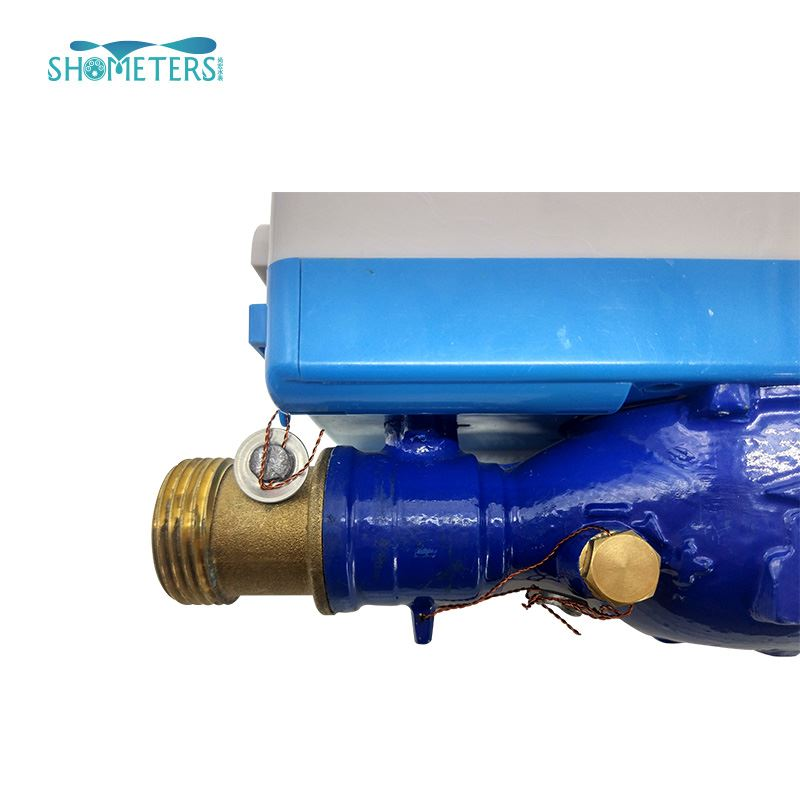

The IC card smart water meter we use is really just have a prepaid function, of course not,with the current water meter industry deep research and development progress, remote water meter also joined the ranks of water-saving control of the instrument, the traditional IC card smart meter has been upgraded, not only can achieve the pre-paid off valve function, but also At the same time to achieve network-controlled valve control function, everything will more intelligent and convenient services to users.

Intelligent remote control valve is a more advanced meter, many residential users have begun to use, but also in the market has been large-scale promotion and application, this progress will be water management sector to achieve Modern management has taken a greater step, people's water life is get smart.